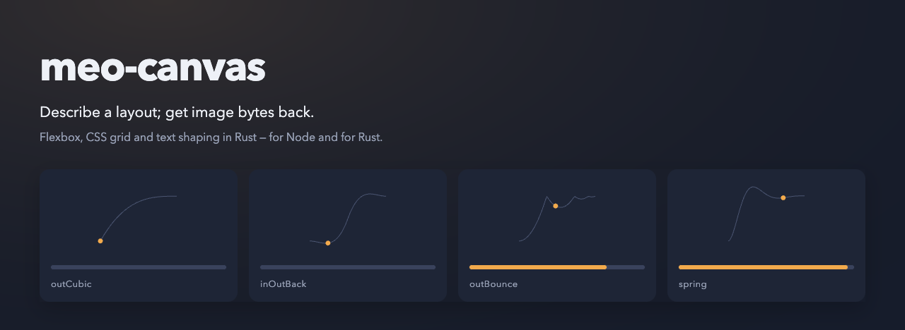

Server-side image generation for Node. Describe a layout the way you would describe a page — boxes, rows, text, images, paths, charts — and get back encoded bytes.
Newest release v10.0.0-alpha.5 Read the reference →
No stable 10.x has been published yet, so there is no
latest/ here. v10.0.0-alpha.5 is a prerelease: on npm it is
meo-canvas@next rather than latest, and a bare
npm install meo-canvas does not reach it.
latest/ appears with the first stable release.